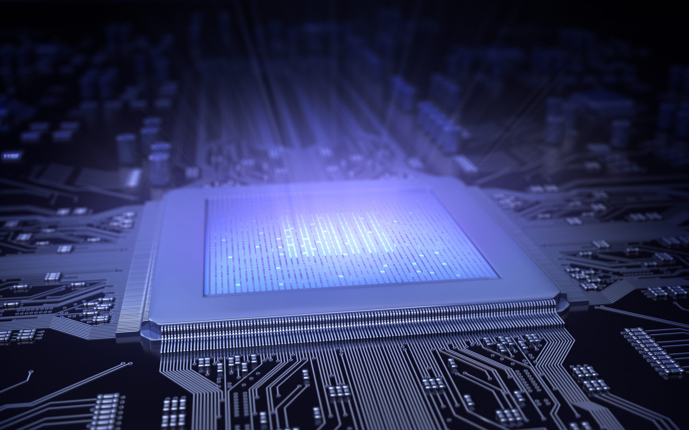

Есть ряд областей, в которых применение оптических компьютеров было бы уже сейчас крайне оправданным, хотя вряд ли стоит ждать, что они скоро повсеместно заменят привычные нам электронные устройства. Выгода в том, что фотоны являются идеальным передатчиком информации. Оптический сигнал в волокне может переноситься на десятки километров практически без затухания и искажений. Кроме того, фотоны оптического диапазона обладают очень большой пропускной способностью: эта величина определяет, сколько битов информации можно упаковать в импульс определенной длительности. Вот почему уже сейчас для передачи информации на большие расстояния используют оптоволоконный кабель. Однако пока данные, прошедшие по оптоволокну, обрабатываются с помощью электронных устройств. Постоянный перевод сигнала из оптического в электронный и назад тратит время и энергию. Было бы здорово убрать этот переход и обрабатывать пришедший по оптоволокну сигнал также оптическими методами. Уже есть системы, которые позволяют это частично делать, но до создания полноценного оптического компьютера пока далеко.
